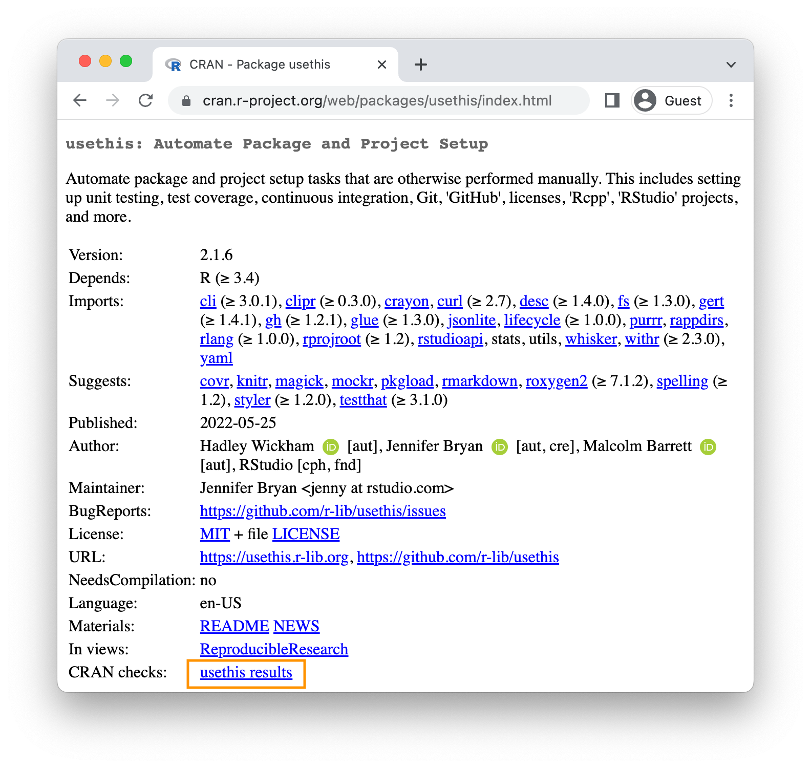

> use_release_issue()
✔ Setting active project to '/Users/jenny/rrr/usethis'
Current version is 2.1.6.9000.
What should the release version be? (0 to exit)
1: major --> 3.0.0
2: minor --> 2.2.0
3: patch --> 2.1.7
Selection: 22 Releasing to CRAN
We’ve been calling out CRAN-specific concerns throughout the book, on our journey through the various parts of a package, such as tests and examples. In this chapter, we focus on the actual process of releasing a package to CRAN, for the first time or as an update.
The most concrete expression of our release process is the checklist produced by usethis::use_release_issue(), which opens a GitHub issue containing a list of todo’s. This checklist is constantly-evolving and is responsive to a few characteristics of the package, so don’t be shocked if you see something a bit different than what we show here. The main concerns are fairly timeless and we’ll use this checklist to help structure this chapter.
But first: note that you will have deep regrets if you approach preparing your package for CRAN as a separate activity that you do after completing the planned development for a release. This advice is extremely relevant here:
If it hurts, do it more often. – Martin Fowler1
In the current context, interpret this to mean that you should be running R CMD check regularly, preferably on multiple platforms, and promptly addressing any issues that surface. Recall that our preferred way to do this is via devtools::check() (Section 4.5).
Why would you want to do something that is painful more often? Because it leads to less pain overall. First, solving 5 problems is more than 5 times as hard as solving 1. It’s demoralizing to be blocked by several errors and the potential for unsavory interactions between them makes each one harder to isolate and fix. Second, fast feedback tends to reduce your total number of mistakes. Once you learn some lesson the hard way, you are unlikely to make that same mistake dozens of times elsewhere in your package. Finally, practice makes perfect! With greater exposure, you will get better at interpreting and responding to problems that surface in R CMD check.
Another natural reaction is: why don’t I eliminate this pain completely by not releasing my package on CRAN at all? For certain types of packages, this may be the right call. One such example is a personal package of helper functions. Another example is a package that supports a specific organization, as long as you also have a reasonable method of distributing that package to its users. The main reason to have your package on CRAN is to give your package greater reach. The vast majority of R users only install packages from CRAN, either due to personal or company policy or just from a lack of awareness about alternatives. CRAN provides discoverability, ease of installation, and a stamp of authenticity. The CRAN submission process can be frustrating, but it has many payoffs, and this chapter aims to make it as painless as possible.
The release process we describe here is best used as a pre-flight checklist, that complements your ongoing efforts to keep your package passing R CMD check cleanly and CRAN-compliant. There are two big realizations that often come with a CRAN release process:
If you’ve been turning a blind eye to WARNINGs and ERRORs from
R CMD check, you really do have to study and eliminate those now. You should even eliminate as many NOTEs as possible.Even if your package passes
R CMD checkcleanly on your machine, it can be eye-opening when it leaves these cozy, familiar surroundings and is, instead, checked on a remote server, configured by someone else, running an entirely different operating system. This is why it is so valuable to use a continuous integration service like GitHub Actions (Section 20.2.1) to regularly check your package on macOS, Windows, and Linux.
These are the major steps in the release process:
- Determine the release type, which dictates the version number.
- If the package is already on CRAN: Do due diligence on existing CRAN results. If this is a first release: confirm you are in compliance with CRAN policies.
- Freshen up documentation files, such as
README.mdandNEWS.md. - Double
check()that your package is passing cleanly on multiple operating systems and on the released and development version of R. - Perform reverse dependency checks, if other packages depend on yours.
- Submit the package to CRAN and wait for acceptance.
- Create a GitHub release and prepare for the next version by incrementing the version number.
- Publicize the new version.
22.1 Decide the release type
When you call use_release_issue(), you’ll be asked which type of release you intend to make.
The immediate question feels quite mechanical: which component of the version number do you want to increment? But remember that we discussed the substantive differences in release types in Section 21.5.
In our workflow, this planned version number is recorded in the GitHub issue that holds the release checklist, but we don’t actually increment the version in DESCRIPTION until later in the process (Section 22.7). However, it’s important to declare the release type up front, because the process (and, therefore, the checklist) looks different for, e.g., a patch release versus a major release.
22.2 Initial CRAN release: Special considerations
Every new package receives a higher level of scrutiny from CRAN. In addition to the usual automated checks, new packages are also reviewed by a human, which inevitably introduces a certain amount of subjectivity and randomness. There are many packages on CRAN that would not be accepted in their current form, if submitted today as a completely new package. This isn’t meant to discourage you. But you should be aware that, just because you see some practice in an established package (or even in base R), that doesn’t mean you can do the same in your new package.
Luckily, the community maintains lists of common “gotchas” for new packages. If your package is not yet on CRAN, the checklist begins with a special section that reflects this recent collective wisdom. Attending to these checklist items has dramatically improved our team’s success rate for initial submissions.
First release
If you don’t already have a NEWS.md file, you are encouraged to create one now with usethis::use_news_md(). You’ll want this file eventually and this anticipates the fact that the description of your eventual GitHub release (Section 22.9) is drawn from NEWS.md.
usethis::use_cran_comments() initiates a file to hold submission comments for your package. It’s very barebones at first, e.g.:
## R CMD check results
0 errors | 0 warnings | 1 note
* This is a new release.In subsequent releases, this file becomes less pointless; for example, it is where we report the results of reverse dependency checks. This is not a place to wax on with long explanations about your submission. In general, you should eliminate the need for such explanations, especially for an initial submission.
We highly recommend that your package have a README file (Section 18.1). If it does, this is a good time to check the installation instructions provided there. You may need to switch from instructions to install it from GitHub, in favor of installing from CRAN, in anticipation of your package’s acceptance.
The Title and Description fields of DESCRIPTION are real hotspots for nitpicking during CRAN’s human review. Carefully review the advice given in Section 9.2. Also check that Authors@R includes a copyright holder, indicated by the ‘cph’ role. The two most common scenarios are that you add ‘cph’ to your other roles (probably ‘cre’ and ‘aut’) or that you add your employer to Authors@R: with the ‘cph’ and, perhaps, ‘fnd’ role. (When you credit a funder via the ‘fnd’ role, they are acknowledged in the footer of your pkgdown website.) This is also a good time to ensure that the maintainer’s e-mail address is appropriate. This is the only way that CRAN can correspond with you. If there are problems and they can’t get in touch with you, they will remove your package from CRAN. Make sure this email address is likely to be around for a while and that it’s not heavily filtered.
Double check that each of your exported functions documents its return value (with the @returns tag, Section 16.4) and has an @examples section (Section 16.5). If you have examples that cannot be run on CRAN, you absolutely must use the techniques in Section 16.5.4 to express the relevant pre-conditions properly. Do not take shortcuts, such as having no examples, commenting out your examples, or putting all of your examples inside \dontrun{}.
If you have embedded third party code in your package, check that you are correctly abiding by and declaring its license (Section 12.4).
Finally, take advantage of any list of ad hoc checks that other package developers have recently experienced with CRAN. At the time of writing, https://github.com/DavisVaughan/extrachecks is a good place to find such first-hand reports. Reading such a list and preemptively modifying your package can often make the difference between a smooth acceptance and a frustrating process requiring multiple attempts.
22.2.1 CRAN policies
We alert you to specific CRAN policies throughout this book and, especially, through this chapter. However, this is something of a moving target, so it pays off to make some effort to keep yourself informed about future changes to CRAN policy.
The official home of CRAN policy is https://cran.r-project.org/web/packages/policies.html. However, it’s not very practical to read this document, e.g., once a week and simply hope that you’ll notice any changes. The GitHub repository eddelbuettel/crp monitors the CRAN Repository Policy by tracking the evolution of the underlying files in the source of the CRAN website. Therefore the commit history of that repository makes policy changes much easier to navigate. You may also want to follow the CRAN Policy Watch Mastodon account, which toots whenever a change is detected.2
The R-package-devel mailing list is another good resource for learning more about package development. You could subscribe to it to keep tabs on what other maintainers are talking about. Even if you don’t subscribe, it can be useful to search this list, when you’re researching a specific topic.
22.3 Keeping up with change
Now we move into the main checklist items for a minor or major release of a package that is already on CRAN. Many of these items also appear in the checklist for a patch or initial release.
These first few items confirm that your package is keeping up with its surroundings and with itself. The first item, “Check current CRAN check results”, will be a hyperlink to the CRAN check results for the version of the package that is currently on CRAN. If there are any WARNINGs or ERRORs or NOTEs there, you should investigate and determine what’s going on. Occasionally there can be an intermittent hiccup at CRAN, but generally speaking, any result other than “OK” is something you should address with the release you are preparing. You may discover your package is in a dysfunctional state due to changes in base R, CRAN policies, CRAN tooling, or packages you depend on.
If you are in the process of deprecating a function or an argument, a minor or major release is a good time to consider moving that process along as described in Section 21.7. This is also a good time to look at all the NEWS bullets that have accumulated since the last release (“Polish NEWS”). Even if you’ve been diligent about jotting down all the news-worthy changes, chances are these bullets will benefit from some re-organization and editing for consistency and clarity (Section 18.2).
Another very important check is to run urlchecker::url_check(). CRAN’s URL checks are described at https://cran.r-project.org/web/packages/URL_checks.html and are implemented by code that ships with R itself. However, these checks are not exposed in a very usable way. The urlchecker package was created to address this and exposes CRAN’s URL-checking logic in the url_check() function. The main problems that surface tend to be URLs that don’t work anymore or URLs that use redirection. Obviously, you should update or remove any URL that no longer exists. Redirection, however, is trickier. If the status code is “301 Moved Permanently”, CRAN’s view is that your package should use the redirected URL. The problem is that many folks don’t follow RFC7231 to the letter and use this sort of redirect even when they have a different intent, i.e. their intent is to provide a stable, user-friendly URL that then redirects to something less user-friendly or more volatile. If a legitimate URL you want to use runs afoul of CRAN’s checks, you’ll have to choose between a couple of less-than-appealing options. You could try to explain the situation to CRAN, but this requires human review, and thus is not recommended. Or you can convert such URLs into non-hyperlinked, verbatim text. Note also that even though urlchecker is using the same code as CRAN, your local results may still differ from CRAN’s, due to differences in other ambient conditions, such as environment variables and system capabilities.
If you have a README.Rmd file, you will also want to re-build the static README.md file with the current version of your package. The best function to use for this is devtools::build_readme(), because it is guaranteed to render README.Rmd against the current source code of your package.
22.4 Double R CMD checking
Next come a couple of items related to R CMD check. Remember that this should not be the first time you’ve run R CMD check since the previous release! Hopefully, you are running R CMD check often during local development and are using a continuous integration service, like GitHub Actions. This is meant to be a last-minute, final reminder to double-check that all is still well:
Note that the brevity of this list implicitly reflects that tidyverse packages are checked after every push via GitHub Actions, across multiple operating systems and versions of R (including the development version), and that most of the tidyverse team develops primarily on macOS. CRAN expects you to “make all reasonable efforts” to get your package working across all of the major R platforms and packages that don’t work on at least two will typically not be accepted.
The next subsection (Section 22.4.1) is optional reading with more details on the all the platforms that CRAN cares about and how you can access them. If your ongoing checks are more limited than ours, you may want to make up for that with more extensive pre-submission checks. You may also need this knowledge to troubleshoot a concrete problem that surfaces in CRAN’s checks, either for an incoming submission or for a package that’s already on CRAN.
When running R CMD check for a CRAN submission, you have to address any problems that show up:
You must fix all
ERRORs andWARNINGs. A package that contains any errors or warnings will not be accepted by CRAN.Eliminate as many
NOTEs as possible. EachNOTErequires human oversight, which creates friction for both you and CRAN. If there are notes that you do not believe are important, it is almost always easier to fix them (even if the fix is a bit of a hack) than to persuade CRAN that they’re OK. See our online-only guide toR CMD checkfor details on how to fix individual problems.-
If you can’t eliminate a
NOTE, list it incran-comments.mdand explain why you think it is spurious. We discuss this file further in Section 22.6.Note that there will always be one
NOTEwhen you first submit your package. This reminds CRAN that this is a new submission and that they’ll need to do some extra checks. You can’t eliminate thisNOTE, so just mention incran-comments.mdthat this is your first submission.
22.4.1 CRAN check flavors and related services
CRAN runs R CMD check on all contributed packages upon submission and on a regular basis, on multiple platforms or what they call “flavors”. You can see CRAN’s current check flavors here: https://cran.r-project.org/web/checks/check_flavors.html. There are various combinations of:
- Operating system and CPU: Windows, macOS (x86_64, arm64), Linux (various distributions)
- R version: r-devel, r-release, r-oldrel
- C, C++, FORTRAN compilers
- Locale, in the sense of the
LC_CTYPEenvironment variable (this is about which human language is in use and character encoding)
CRAN’s check flavors almost certainly include platforms other than your preferred development environment(s), so you will eventually need to make an explicit effort to check and, perhaps, troubleshoot your package on these other flavors.
It would be impractical for individual package developers to personally maintain all of these testing platforms. Instead, we turn to various community- and CRAN-maintained resources for this. Here is a selection, in order of how central they are to our current practices:
GitHub Actions (GHA) is our primary means of testing packages on multiple flavors, as covered in Section 20.2.1.
-
R-hub builder (R-hub). This is a service supported by the R Consortium where package developers can submit their package for checks that replicate various CRAN check flavors.
You can use R-hub via a web interface (https://builder.r-hub.io) or, as we recommend, through the rhub R package.
rhub::check_for_cran()is a good option for a typical CRAN package and is morally similar to the GHA workflow configured byusethis::use_github_action("check-standard"). However, unlike GHA, R-hub currently does not cover macOS, only Windows and Linux.rhub also helps you access some of the more exotic check flavors and offers specialized checks relevant to packages with compiled code, such as
rhub::check_with_sanitizers(). -
macOS builder is a service maintained by the CRAN personnel who build the macOS binaries for CRAN packages. This is a relatively new addition to the list and checks packages with “the same setup and available packages as the CRAN M1 build machine”.
You can submit your package using the web interface (https://mac.r-project.org/macbuilder/submit.html) or with
devtools::check_mac_release().
22.5 Reverse dependency checks
This innocuous checklist item can actually represent a considerable amount of effort. At a high-level, checking your reverse dependencies (“revdeps”) breaks down into:
Form a list of your reverse dependencies. These are CRAN packages that list your package in their
Depends,Imports,SuggestsorLinkingTofields.Run
R CMD checkon each one.Make sure you haven’t broken someone else’s package with the planned changes in your package.
Each of these steps can require considerable work and judgment. So, if you have no reverse dependencies, you should rejoice that you can skip this step. If you only have a couple of reverse dependencies, you can probably do this “by hand”, i.e. download each package’s source and run R CMD check.
Here we explain ways to do reverse dependency checks at scale, which is the problem we face. Some of the packages maintained by our team have thousands of reverse dependencies and even some of the lower-level packages have hundreds. We have to approach this in an automated fashion and this section will be most useful to other maintainers in the same boat.
All of our reverse dependency tooling is concentrated in the revdepcheck package (https://revdepcheck.r-lib.org/). Note that, at least at the time of writing, the revdepcheck package is not on CRAN. You can install it from Github via devtools::install_github("r-lib/revdepcheck") or pak::pak("r-lib/revdepcheck").
Do this when you’re ready to do revdep checks for the first time:
usethis::use_revdep()This does some one-time setup in your package’s .gitignore and .Rbuildignore files. Revdep checking will create some rather large folders below revdep/, so you definitely want to configure these ignore files. You will also see this reminder to actually perform revdep checks like so, as the checklist item suggests:
revdepcheck::revdep_check(num_workers = 4)This runs R CMD check on all of your reverse dependencies, with our recommendation to use 4 parallel workers to speed things along. The output looks something like this:
> revdepcheck::revdep_check(num_workers = 4)
── INIT ───────────────────────────────────── Computing revdeps ──
── INSTALL ───────────────────────────────────────── 2 versions ──
Installing CRAN version of cellranger
also installing the dependencies 'cli', 'glue', 'utf8', 'fansi', 'lifecycle', 'magrittr', 'pillar', 'pkgconfig', 'rlang', 'vctrs', 'rematch', 'tibble'
Installing DEV version of cellranger
Installing 13 packages: rlang, lifecycle, glue, cli, vctrs, utf8, fansi, pkgconfig, pillar, magrittr, tibble, rematch2, rematch
── CHECK ─────────────────────────────────────────── 8 packages ──
✔ AOV1R 0.1.0 ── E: 0 | W: 0 | N: 0
✔ mschart 0.4.0 ── E: 0 | W: 0 | N: 0
✔ googlesheets4 1.0.1 ── E: 0 | W: 0 | N: 1
✔ readODS 1.8.0 ── E: 0 | W: 0 | N: 0
✔ readxl 1.4.2 ── E: 0 | W: 0 | N: 0
✔ readxlsb 0.1.6 ── E: 0 | W: 0 | N: 0
✔ unpivotr 0.6.3 ── E: 0 | W: 0 | N: 0
✔ tidyxl 1.0.8 ── E: 0 | W: 0 | N: 0
OK: 8
BROKEN: 0
Total time: 6 min
── REPORT ────────────────────────────────────────────────────────
Writing summary to 'revdep/README.md'
Writing problems to 'revdep/problems.md'
Writing failures to 'revdep/failures.md'
Writing CRAN report to 'revdep/cran.md'To minimize false positives, revdep_check() runs R CMD check twice per revdep: once with the released version of your package currently on CRAN and again with the local development version, i.e. with your release candidate. Why two checks? Because sometimes the revdep is already failing R CMD check and it would be incorrect to blame your planned release for the breakage. revdep_check() reports the packages that can’t be checked and, most importantly, those where there are so-called “changes to the worse”, i.e. where your release candidate is associated with new problems. Note also that revdep_check() always works with a temporary, self-contained package library, i.e. it won’t modify your default user or system library.
tidyverse team
We actually use a different function for our reverse dependency checks: revdepcheck::cloud_check(). This runs the checks in the cloud, massively in parallel, making it possible to run revdep checks for packages like testthat (with >10,000 revdeps) in just a few hours!
cloud_check() has been a gamechanger for us, allowing us to run revdep checks more often. For example, we even do this now when assessing the impact of a potential change to a package (Section 21.4), instead of only right before a release.
At the time of writing, cloud_check() is only available for package maintainers at Posit, but we hope to offer this service for the broader R community in the future.
In addition to some interactive messages, the revdep check results are written to the revdep/ folder:
-
revdep/README.md: This is a high-level summary aimed at maintainers. The filename and Markdown format are very intentional, in order to create a nice landing page for therevdep/folder on GitHub. -
revdep/problems.md: This lists the revdeps that appear to be broken by your release candidate. -
revdep/failures.md: This lists the revdeps that could not be checked, usually because of an installation failure, either of the revdep itself or one of its dependencies. -
revdep/cran.md: This is a high-level summary aimed at CRAN. You should copy and paste this intocran-comments.md(Section 22.6). - Other files and folders, such as
checks.noindex,data.sqlite, andlibrary.noindex. These are for revdepcheck’s internal use and we won’t discuss them further.
The easiest way to get a feel for these different files is to look around at the latest revdep results for some tidyverse packages, such as dplyr or tidyr.
The revdep check results – local, cloud, or CRAN – are not perfect, because this is not a simple task. There are various reasons why a result might be missing, incorrect, or contradictory in different runs.
False positives: sometimes revdepcheck reports a package has been broken, but things are actually fine (or, at least, no worse than before). This most commonly happens because of flaky tests that fail randomly (Section 15.4.1), such as HTTP requests. This can also happen because the instance runs out of disk space or other resources, so the first check using the CRAN version succeeds and the second check using the dev version fails. Sometimes it’s obvious that the problem is not related to your package.
False negatives: sometimes a package has been broken, but you don’t detect that. For us, this usually happens when
cloud_check()can’t check a revdep because it can’t be installed, typically because of a missing system requirement (e.g. Java). These are separately reported as “failed to test” but are still included inproblems.md, because this could still be direct breakage caused by your package. For example, if you remove an exported function that’s used by another package, installation will fail.
Generally these differences are less of a worry now that CRAN’s own revdep checks are well automated, so new failures typically don’t involve a human.
22.5.1 Revdeps and breaking changes
If the revdep check reveals breakages, you need to examine each failure and determine if it’s:
A false positive.
A non-breaking change, i.e. a failure caused by off-label usage of your package.
A bug in your package that you need to fix.
A deliberate breaking change.
If your update will break another package (regardless of why), you need to inform the maintainer, so they hear it first from you, rather than CRAN. The nicest way to do this is with a patch that updates their package to play nicely with yours, perhaps in the form of a pull request. This can be a decent amount of work and is certainly not feasible for all maintainers. But working through a few of these can be a good way to confront the pain that breaking change causes and to reconsider whether the benefits outweigh the costs. In most cases, a change that affects revdeps is likely to also break less visible code that lives outside of CRAN packages, such as scripts, reports, and Shiny apps.
If you decide to proceed, functions such as revdepcheck::revdep_maintainers() and revdepcheck::revdep_email() can help you notify revdep maintainers en masse. Make sure the email includes a link to documentation that describes the most common breaking changes and how to fix them. You should let the maintainers know when you plan to submit to CRAN (we recommend giving at least two weeks notice), so they can submit their updated version before that. When your release date rolls around, re-run your checks to see how many problems have been resolved. Explain any remaining failures in cran-comments.md as demonstrated in Section 22.6. The two most common cases are that you are unable to check a package because you aren’t able to install it locally or a legitimate change in the API which the maintainer hasn’t addressed yet. As long as you have given sufficient advanced notice, CRAN will accept your update, even if it breaks some other packages.
tidyverse team
Lately the tidyverse team is trying to meet revdep maintainers more than halfway in terms of dealing with breaking changes. For example, in GitHub issue tidyverse/dplyr#6262, the dplyr maintainers tracked hundreds of pull requests in the build-up to the release of dplyr v1.1.0. As the PRs are created, it’s helpful to add links to those as well. As the revdep maintainers merge the PRs, they can be checked off as resolved. If some PRs are still in-flight when the announced submission date rolls around, the situation can be summarized in cran-comments.md, as was true in the case of dplyr v1.1.0.
22.6 Update comments for CRAN
We use the cran-comments.md file to record comments about a submission, mainly just the results from R CMD check and revdep checks. If you are making a specific change at CRAN’s request, possibly under a deadline, that would also make sense to mention. We like to track this file in Git, so we can see how it changes over time. It should also be listed in .Rbuildignore, since it should not appear in your package bundle. When you’re ready to submit, devtools::submit_cran() (Section 22.7) incorporates the contents of cran-comments.md when it uploads your submission.
The target audience for these comments is the CRAN personnel, although there is no guarantee that they will read the comments (or when in the submission process they read them). For example, if your package breaks other packages, you will likely receive an automated email about that, even if you’ve explained that in the comments. Sometimes a human at CRAN then reads the comments, is satisfied, and accepts your package anyway, without further action from you. At other times, your package may be stuck in the queue until you copy cran-comments.md and paste it into an email exchange to move things along. In either case, it’s worth keeping these comments in their own, version-controlled file.
Here is a fairly typical cran-comments.md from a recent release of forcats. Note that the R CMD check results are clean, i.e. there is nothing that needs to be explained or justified, and there is a concise summary of the revdep process.
## R CMD check results
0 errors | 0 warnings | 0 notes
## revdepcheck results
We checked 231 reverse dependencies (228 from CRAN + 3 from Bioconductor), comparing R CMD check results across CRAN and dev versions of this package.
We saw 2 new problems:
* epikit
* stevemisc
Both maintainers were notified on Jan 12 (~2 week ago) and supplied with patches.
We failed to check 3 packages
* genekitr (NA)
* OlinkAnalyze (NA)
* SCpubr (NA)This layout is designed to be easy to skim, and easy to match up to the R CMD check results seen by CRAN maintainers. It includes two sections:
-
Check results: We always state that there were no errors or warnings (and we make sure that’s true!). Ideally we can also say there were no notes. But if not, any
NOTEs are presented in a bulleted list. For eachNOTE, we include the message fromR CMD checkand a brief description of why we think it’s OK.Here is how a
NOTEis explained for the nycflights13 data package:## R CMD check results 0 errors | 0 warnings | 1 note * Checking installed package size: installed size is 6.9Mb sub-directories of 1Mb or more: data 6.9Mb This is a data package that will be rarely updated. Reverse dependencies: If there are revdeps, this is where we paste the contents of
revdep/cran.md(Section 22.5). If there are no revdeps, we recommend that you keep this section, but say something like: “There are currently no downstream dependencies for this package”.
22.7 The submission process
When you’re truly ready to submit, it’s time to actually bump the version number in DESCRIPTION. This checklist item will reflect the type of release declared at the start of this process (patch, minor, or major), in the initial call to use_release_issue().
We recommend that you submit your package to CRAN by calling devtools::submit_cran(). This convenience function wraps up a few steps:
Creates the package bundle (Section 3.3) with
pkgbuild::build(manual = TRUE), which ultimately callsR CMD build.Posts the resulting
*.tar.gzfile to CRAN’s official submission form (https://cran.r-project.org/submit.html), populating your name and email fromDESCRIPTIONand your submission comments fromcran-comments.md.Confirms that the submission was successful and reminds you to check your email for the confirmation link.
Writes submission details to a local
CRAN-SUBMISSIONfile, which records the package version, SHA, and time of submission. This information is used later byusethis::use_github_release()to create a GitHub release once your package has been accepted.CRAN-SUBMISSIONwill be added to.Rbuildignore. We generally do not gitignore this file, but neither do we commit it. It’s an ephemeral note that exists during the interval between submission and (hopefully) acceptance.
After a successful upload, you should receive an email from CRAN within a few minutes. This email notifies you, as maintainer, of the submission and provides a confirmation link. Part of what this does is confirm that the maintainer’s email address is correct. At the confirmation link, you are required to re-confirm that you’ve followed CRAN’s policies and that you want to submit the package. If you fail to complete this step, your package is not actually submitted to CRAN!
Once your package enters CRAN’s system it is automatically checked on Windows and Linux, probably against both the released and development versions of R. You will get another email with links to these check results, usually within a matter of hours. An initial submission (Section 22.2) will receive additional scrutiny from CRAN personnel. The process is potentially fully automated when updating a package that is already on CRAN. If a package update passes its initial checks, CRAN will then run reverse dependency checks.
22.8 Failure modes
There are at least three ways for your CRAN submission to fail:
It does not pass
R CMD check. This is an automated result.Human review finds the package to be in violation of CRAN policies. This applies mostly to initial submissions, but sometimes CRAN personnel decides to engage in ad hoc review of updates to existing packages that fail any automated checks.
Reverse dependency checks suggest there are “changes to the worse”. This is an automated result.
Failures are frustrating and the feedback may be curt and may feel downright insulting. Take comfort in the fact that this a widely shared experience across the R community. It happens to us on a regular basis. Don’t rush to respond, especially if you are feeling defensive.
Wait until you are able to focus your attention on the technical issues that have been raised. Read any check results or emails carefully and investigate the findings. Unless you feel extremely strongly that discussion is merited, don’t respond to the e-mail. Instead:
Fix the identified problems and make recommended changes. Re-run
devtools::check()on any relevant platforms to make sure you didn’t accidentally introduce any new problems.Increase the patch version of your package. Yes, this means that there might be gaps in your released version numbers. This is not a big deal.
-
Add a “Resubmission” section at the top of
cran-comments.md. This should clearly identify that the package is a resubmission, and list the changes that you made.## Resubmission This is a resubmission. In this version I have: * Converted the DESCRIPTION title to title case. * More clearly identified the copyright holders in the DESCRIPTION and LICENSE files. If necessary, update the check results and revdep sections.
Run
devtools::submit_cran()to re-submit the package.
If your analysis indicates that the initial failure was a false positive, reply to CRAN’s email with a concise explanation. For us, this scenario mostly comes up with respect to revdep checks. It’s extremely rare for us to see failure for CRAN’s initial R CMD check runs and, when it happens, it’s often legitimate. On the other hand, for packages with a large number of revdeps, it’s inevitable that a subset of these packages have some flaky tests or brittle examples. Therefore it’s quite common to see revdep failures that have nothing to do with the proposed package update. In this case, it is appropriate to send a reply email to CRAN explaining why you think these are false positives.
22.9 Celebrating success
Now we move into the happiest section of the check list.
CRAN will notify you by email once your package is accepted. This is when we first push to GitHub with the new version number, i.e. we wait until it’s certain that this version will actually be released on CRAN. Next we create a GitHub release corresponding to this CRAN release, using usethis::use_github_release(). A GitHub release is basically a glorified Git tag. The only aspect of GitHub releases that we regularly take advantage of is the release notes. usethis::use_github_release() creates release notes from the NEWS bullets relevant to the current release. Note that usethis::use_github_release() depends crucially on the CRAN-SUBMISSION file that was written by devtools::submit_cran(): that’s how it knows which SHA to tag. After the successful creation of the GitHub release, use_github_release() deletes this temporary file.
Now we prepare for the next release by incrementing the version number yet again, this time to a development version using usethis::use_dev_version(). It makes sense to immediately push this state to GitHub so that, for example, any new branches or pull requests clearly have a development version as their base.
After the package has been accepted by CRAN, binaries are built for macOS and Windows. It will also be checked across the panel of CRAN check flavors. These processes unfold over a few days, post-acceptance, and sometimes they uncover errors that weren’t detected by the less comprehensive incoming checks. It’s a good idea to visit your package’s CRAN landing page a few days after release and just make sure that all still seems to be well. Figure 22.1 highlights where these results are linked from a CRAN landing page.

If there is a problem, prepare a patch release to address it and submit using the same process as before. If this means you are making a second submission less than a week after the previous, explain the situation in cran-comments.md. Getting a package established on CRAN can take a couple of rounds, although the guidance in this chapter is intended to maximize the chance of success on the first try. Future releases, initiated from your end, should be spaced at least one or two months apart, according to CRAN policy.
Once your package’s binaries are built and it has passed checks across CRAN’s flavors, it’s time for the fun part: publicizing your package. This takes different forms, depending on the type of release. If this is your initial release (or, at least, the first release for which you really want to attract users), it’s especially important to spread the word. No one will use your helpful new package if they don’t know that it exists. There are a number of places to announce your package, such as Twitter, Mastodon, LinkedIn, Slack communities, etc. Make sure to use any relevant tags, such as the #rstats hashtag. If you have a blog, it’s a great idea to write a post about your release.
When introducing a package, the vibe should be fairly similar to writing your README or a “Getting Started” vignette. Make sure to describe what the package does, so that people who haven’t used it before can understand why they should even care. For existing packages, we tend to write blog posts for minor and major releases, but not for a patch release. In all cases, we find that these blog posts are most effective when they include lots of examples, i.e. “show, don’t tell”. For package updates, remember that the existence of a comprehensive NEWS file frees you from the need to list every last change in your blog post. Instead, you can focus on the most important changes and link to the full release notes, for those who want the gory details.
If you do blog about your package, it’s good to capture this as yet another piece of documentation in your pkgdown website. A typical pkgdown site has a “News” item in the top navbar, linking to a “Changelog” which is built from NEWS.md. This drop-down menu is a common place to insert links to any blog posts about the package. You can accomplish this by having YAML like this in your _pkgdown.yml configuration file:
news:
releases:
- text: "Renaming the default branch (usethis >= 2.1.2)"
href: https://www.tidyverse.org/blog/2021/10/renaming-default-branch/
- text: "usethis 2.0.0"
href: https://www.tidyverse.org/blog/2020/12/usethis-2-0-0/
- text: "usethis 1.6.0"
href: https://www.tidyverse.org/blog/2020/04/usethis-1-6-0/Congratulations! You have released your first package to CRAN and made it to the end of the book!
Fowler’s blog post “FrequencyReducesDifficulty” is a great read on this topic, https://martinfowler.com/bliki/FrequencyReducesDifficulty.html.↩︎
For many years, there was, instead, a CRAN Policy Watch Twitter account. But thanks to the new limits on API access for that “rotting corpse of a platform”, the Twitter account can no longer operate.↩︎